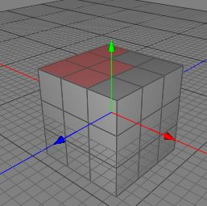
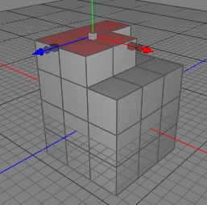
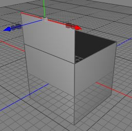
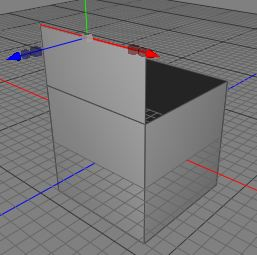

同位置に複製 ツール
同位置に複製 ツールは、ほとんど 押し出し ツールと同じですが、同位置に複製 ツールは、ユーザーの追加操作を必要としない（呼び出しと同時に実行される）ヘッドレスツールです。（環境設定ウィンドウで）同位置に複製 ツールにホットキーを割当てると、選択したポリゴンを移動・拡大縮小する前に、同位置に複製 ツールを実行してやる事で、ツールを切り替えずに 移動変形ツール ツールで 押し出し や 内側に押し出し を行う事ができます。
編集モード
同位置に複製 ツールは、ローポリゴンオブジェクトにのみ適用する事ができます。また ポリゴンモード か エッジモード でのみ使用する事が可能です。

同位置に複製 ツールを使用するには、ローポリゴンオブジェクトのいくつかのポリゴンを選択し、メニューコマンドから "ツール ポリゴン 同位置に複製" を呼び出します。選択したポリゴンを移動した場合、その選択したポリゴンの周囲に新しいポリゴンが作成させているのを確認できるでしょう。
ポリゴン 同位置に複製" を呼び出します。選択したポリゴンを移動した場合、その選択したポリゴンの周囲に新しいポリゴンが作成させているのを確認できるでしょう。
 
同位置に複製 ツールは、ポリゴンオブジェクトを、そのエッジから広げるためにも使用する事ができます。そのために、いくつかの（複数のポリゴンが共有していない、開いた）エッジを選択します。そして、同位置に複製 ツールをメニューコマンド "ツール ポリゴン 同位置に複製" から呼び出し、適用します。選択したエッジを 移動変形ツール ツールで移動すると、新しいポリゴンが選択したエッジにそって作成されるのを確認できます。
 

補助キー
-
- なし
プロパティ
- なし